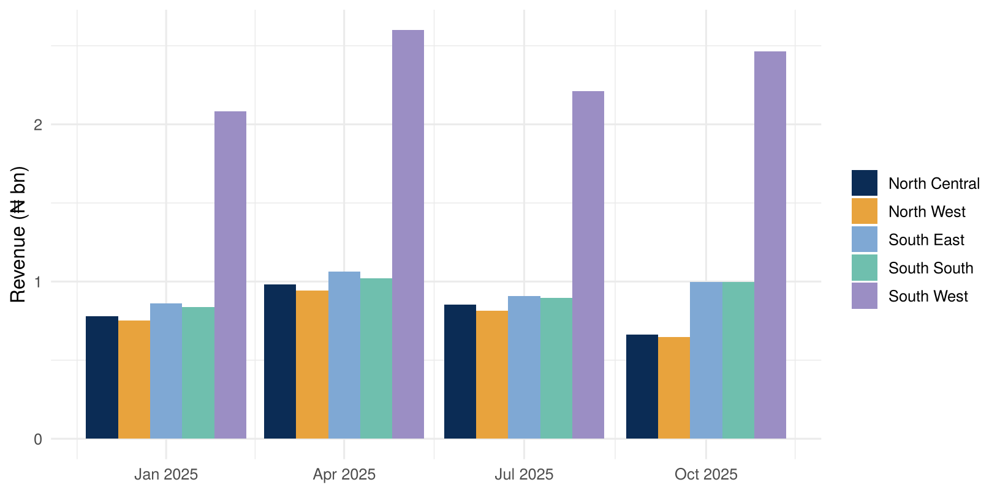

A version-controlled catalogue of business metrics and dimensions, each with Structured Query Language (SQL), meaning and an owner, from which every report, dashboard and artificial intelligence (AI) query compiles its SQL
Why
Without it, “revenue”, “active customer” and “default rate” get re-implemented in every tool, slightly differently, for ever
When
As soon as a second tool or team consumes gold. Before you introduce an AI assistant, always
Who
Metric owners (chief financial officer (CFO) for revenue, chief human resources officer (CHRO) for attrition) approve definitions. Analytics engineers encode them. Everyone consumes
gross_margin_pct is SUM(gp) / SUM(revenue), notAVG(gp / revenue). The average of ratios gives a small depot the same weight as Lagos Mainland. Encoding the ratio once, correctly, in the semantic layer is exactly how you stop this error recurring.
10.2 Our semantic layer
The Lab’s semantic/metrics.yml (from the dashboard project) is the semantic layer. Here we point it at the gold view:
100.0 * SUM(CASE WHEN on_promotion = 1 THEN revenue_ngn ELSE 0 END) / NULLIF(SUM(revenue_ngn), 0)
Commercial Finance
avg_discount_pct
avg_discount_pct
100.0 * AVG(CASE WHEN on_promotion = 1 THEN discount_pct END)
Commercial Finance
active_skus
active_skus
COUNT(DISTINCT sku)
Commercial Finance
🧠 Prompt 10.1 — compile and query
Using my metrics.yml and the metric_sql() compiler in kit.R, generate SQL for revenue, gross margin % and stockout rate by region and by quarter for 2025. Print the SQL, run it, and chart revenue by region over quarters.
SELECT date_trunc('quarter', week_starting) AS period,
region AS region,
SUM(revenue_ngn) AS revenue,
100.0 * SUM(gross_profit_ngn) / NULLIF(SUM(revenue_ngn), 0) AS gross_margin_pct,
100.0 * AVG(stockout_flag) AS stockout_rate_pct
FROM gold.v_sales
WHERE year = 2025
GROUP BY ALL
ORDER BY period
res <-dbGetQuery(con, sql)ggplot(res, aes(period, revenue /1e9, fill = region)) +geom_col(position ="dodge") +scale_fill_manual(values =c("#0B2C55", "#E8A33D", "#7FA8D4", "#6FBFAE", "#9B8EC4")) +labs(x =NULL, y ="Revenue (₦ bn)", fill =NULL)

10.3 Metric trees: explaining why a number moved
Metrics are related. Revenue = units × average selling price, and gross profit = revenue × margin. A metric tree turns “revenue fell” into “volume held, price fell”, which is a different conversation entirely.
🧠 Prompt 10.2 — price-volume bridge
Using the semantic layer’s units and avg_selling_price metrics, decompose the change in revenue between Q4 2024 and Q4 2025 for each category into a volume effect and a price effect (with an interaction term), and show the bridge as a table.
semantic_models + metrics in YAML Ain't Markup Language (YAML) (MetricFlow)
metrics.yml
Looker
LookML measure:
metrics.yml
Cube / AtScale
data model files
metrics.yml
When the organisation also uses Power BI, keep one source of truth. Either generate DAX from metrics.yml, or treat the Power BI model as the master and export its definitions. Never maintain two by hand.
# Generate DAX measure definitions from metrics.yml (simple aggregates only)to_dax <-function(m) { s <- layer$metrics[[m]]$sqlif (grepl("^SUM\\(([a-z_]+)\\)$", s)) sprintf("%s = SUM(v_sales[%s])", layer$metrics[[m]]$label, sub("^SUM\\(([a-z_]+)\\)$", "\\1", s))elsesprintf("-- %s: translate by hand (ratio/conditional): %s", m, s)}cat(vapply(names(layer$metrics), to_dax, ""), sep ="\n")
Revenue (₦) = SUM(v_sales[revenue_ngn])
Units sold = SUM(v_sales[units_sold])
Gross profit (₦) = SUM(v_sales[gross_profit_ngn])
-- gross_margin_pct: translate by hand (ratio/conditional): 100.0 * SUM(gross_profit_ngn) / NULLIF(SUM(revenue_ngn), 0)
-- avg_selling_price: translate by hand (ratio/conditional): SUM(revenue_ngn) / NULLIF(SUM(units_sold), 0)
-- stockout_rate_pct: translate by hand (ratio/conditional): 100.0 * AVG(stockout_flag)
-- promo_share_pct: translate by hand (ratio/conditional): 100.0 * SUM(CASE WHEN on_promotion = 1 THEN revenue_ngn ELSE 0 END) / NULLIF(SUM(revenue_ngn), 0)
-- avg_discount_pct: translate by hand (ratio/conditional): 100.0 * AVG(CASE WHEN on_promotion = 1 THEN discount_pct END)
-- active_skus: translate by hand (ratio/conditional): COUNT(DISTINCT sku)
10.6 Governance of the layer itself
Version control.metrics.yml lives in Git, and every change is a reviewed pull request.
Ownership. One owner per metric. The owner approves changes.
Certification. Only certified metrics may appear in board packs and regulatory returns. exploratory ones carry a badge.
Change log. When a definition changes (for example, revenue becomes net of a new levy), note the effective date, and decide whether history is restated.
10.7 🏋️ Exercises
E10.1 🟢 Add a metric revenue_per_depot_week to a copy of the layer and compile it by region.
E10.2 🟡 Add a status field (certified or exploratory) to each metric. Make the compiler refuse exploratory metrics when called with board_pack = TRUE.
E10.3 🔴 Write a function that checks every metric in the YAML compiles and runs against gold, and returns a pass/fail table. Wire it into the Chapter 9 test suite, so a broken definition closes the gate.
Why is the semantic layer the prerequisite for a trustworthy AI assistant?
Explain “sum first, divide last” to a non-analyst.
What is the difference between a certified and an exploratory metric?
Solutions
An AI assistant has to know what “revenue”, “active customer” or “margin” means in your organisation. Without one approved definition per metric, it invents its own, and each answer can differ from Finance’s. The semantic layer gives the model the certified definitions, so its SQL uses the same formulas as the board pack.
“If one shop sells ₦1,000 at 50% margin and another sells ₦1,000,000 at 10%, the business’s margin is not 30%. Add up all the profit, add up all the sales, then divide.” Totals first, then the ratio, so big and small units count by their size.
A certified metric has an owner, a version and an approval date, and it may appear in board packs and regulatory returns. An exploratory metric is useful for analysis but not yet approved. It carries a badge, and the compiler refuses it for board packs.
10.9 🏢 In the organisation
Start the semantic layer with the ten numbers the executive committee argues about. Put them in a two-hour workshop with their owners, agree the definitions in writing, and encode them the same week. Every later dashboard then inherits the agreement for free.